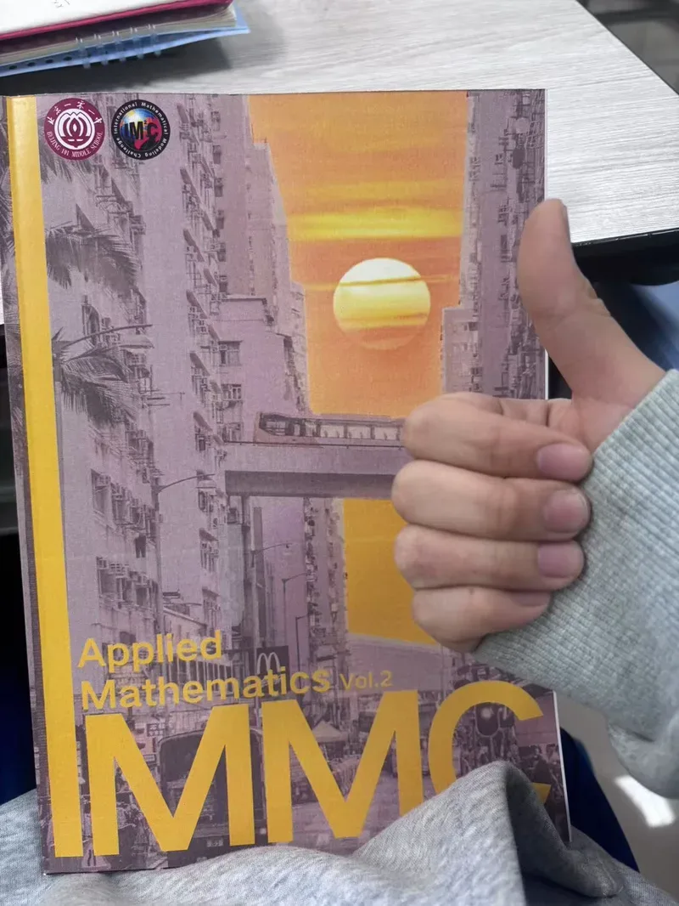
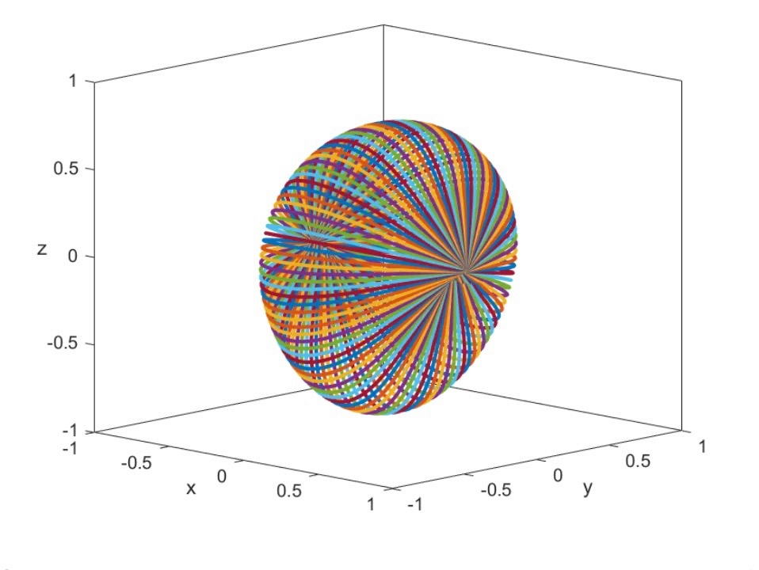
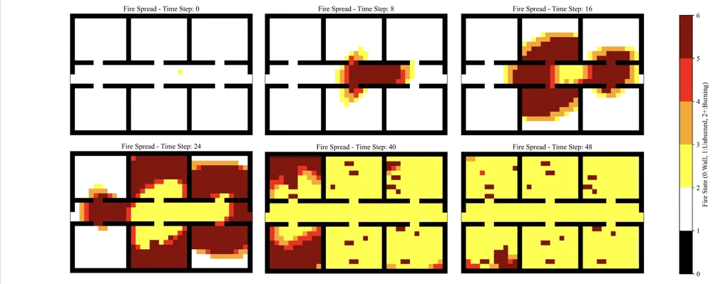
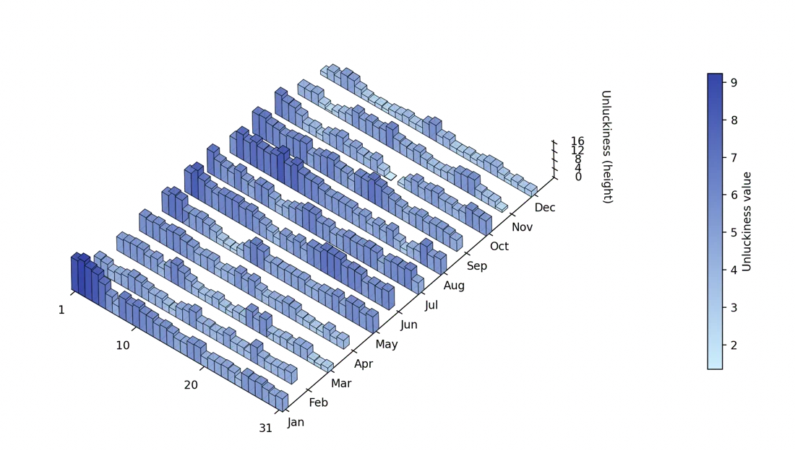

Modellingthe world
Turn a messy real problem into variables, assumptions and a model you can test, then explain it clearly. As captain I split each problem into sub-models, built the core model and wrote the paper against the deadline.
01Saving the Panama Canal's water
IMMC 2024. From the water exchange between lock chambers and water-saving basins I derived the optimal number and size of basins, then combined energy, maintenance, water, labour and material costs into one cost model.

02Teaching a robot to jump rope
IMMC 2025. I described the spinning rope as a catenary using the Jacobi elliptic function sn, drew it at every moment in MATLAB, and found the jump speeds, times and rope lengths that make a jump possible.

03Sweeping a burning building
HiMCM 2025, Finalist. A cellular automaton models fire, smoke and occupants; mixed-integer programming finds the fastest route and number of responders to clear every room.

04Is Friday the 13th unlucky?
IMMC 2026. A Boltzmann-style expectation model and information theory turned 25 years of disasters into "unluckiness". Friday the 13th averaged 5.56 against a maximum of 18.21: the superstition does not hold.

05Guarding Etosha
IMMC 2026. Risk mapping, topological decomposition, Snake-algorithm patrol loops and a Kalman-filter revisit interval for rangers in a vast national park.